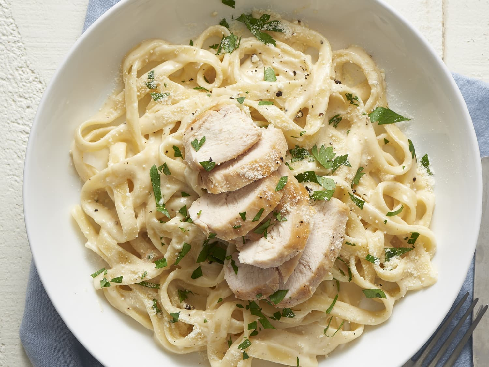

Chicken Alfredo Pasta

Ingredients:
- 1 (16 ounce) box dry fettuccine pasta
- 2 tablespoons vegetable oil
- 2 cloves garlic, sliced
- 2 chicken breasts, diced
- 1 teaspoon red pepper flakes
- 1 teaspoon Italian seasoning
- 1/2 teaspoon ground nutmeg
- salt and ground black pepper to taste
- 1 (16 ounce) jar Alfredo sauce
- 1 cup mozarella cheese
Directions:
-
Fill a large pot with salted water and bring to a rolling boil.
fettuccine at a boil until tender yet firm to the bite, about 8 minutes.
-
Meanwhile, heat oil in a frying pan over medium heat. Add garlic
cook until fragrant, about 2 minutes. Add chicken, red pepper flakes,
Italian seasoning, nutmeg, salt, and pepper. Cook and stir until chicken
is no longer pink, about 5 minutes.
-
Drain pasta. Add Alfredo sauce to the chicken; bring to a simmer. Stir
in mozzarella cheese and cook until melted and well combined. Stir in pasta.
-
Enjoy!